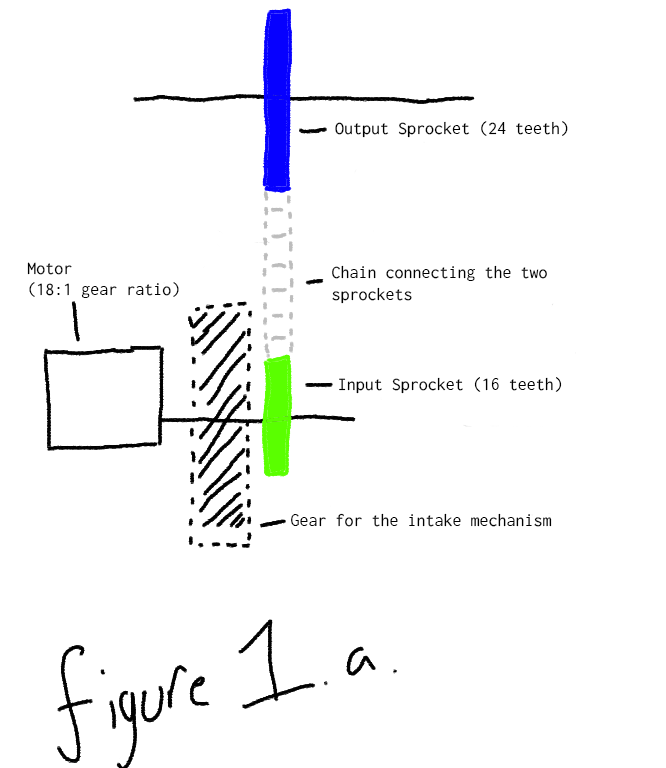
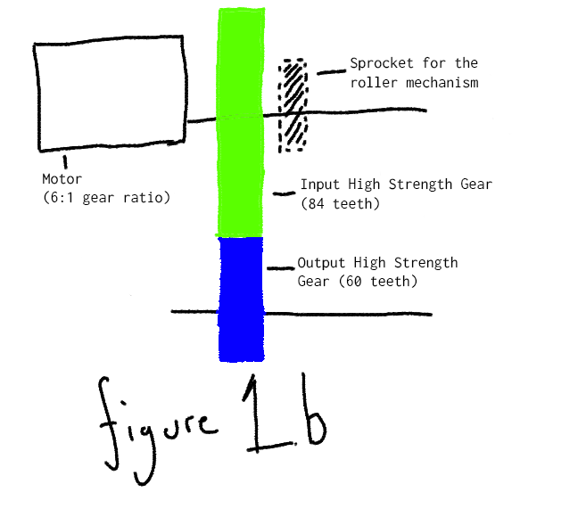
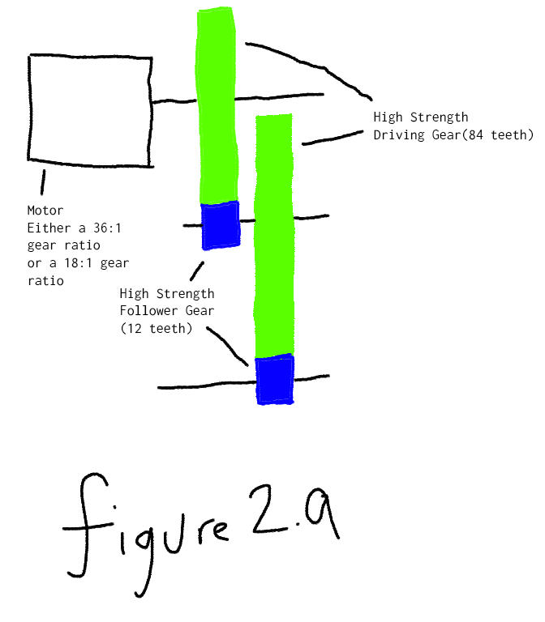
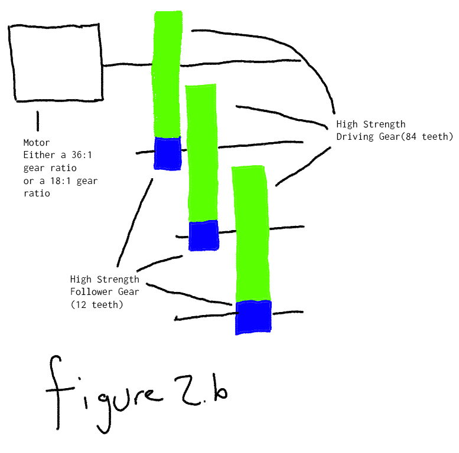

Date: 09-02-2023 | Log #: 1 | Contributer: Veer Singh & Aaron Lindemere
We have decided to completely redesign our entire robot. We have come to this decision due to our utter failure at the Mecha Mayhem Signature event in Calgary, AB.
Here is a list of failure with our previous robot:
- The robot had really bad controls
- Our intake system sucked; Disks had a tendency to get stuck on drive train motors
- We had no way of scoring in the high goal
- We had no way of scoring rollers(Although on the second day of the tournament we were able to scrap together a mechanism to score rollers)
- Our robot did not have enough torque to successfully defend against other, bigger, and heavier robots
- Random parts of our robot had a habit of falling off
- We found that strafing was really ineffective and just allowed other teams to push us around
To fix the issue of not having enough power in our drive train we are using a 6 motor setup with traction wheels instead of our previous 4 motor setup with mecanum wheels.
We are also planning for this robot to be better for moving quickly around the arena and scoring roller and points in the high goal instead of defending.
Instead a of a flywheel launch system we are opting for a catapult or other tension based launch system. We have noticed that all the teams that got in the top 16 at Mecha Mayhem
mostly used a catapult for their launcher.
Our current robot looks like this:
Date: 20-02-2023 | Log #: 2 | Contributer: Veer Singh & Aaron Lindemere
As new ideas and opportunities appear, we have been able to gain access to flex wheels which will help us in creating a more compact, flywheel launcher. A summary of changes we made in the past week-ish include:
- Changed the drive train gear cartridges from the blue 6:1 to the green 18:1. We did this because the robot was hard to control in a confined space with the blue gear cartridges
- We also got a mechanism that will be able to spin rollers. This system is connected to the same motor as the intake to maximize the use of the 8 allocated motors we get
- We added some structural support to the robot; specifically the intake and roller mechanism as they had a tendency to oscillate and cause stress on the 4 screws that held the mechanism in place
Some More Important Stuff
Gear ratios for the intake and rollers are as follows:
The intake and roller motor has a green 18:1 gear cartridge. This spins at 200
$$ \text{gear ratio} = \frac{\text{# of teeth on input gear}}{\text{# of teeth on output gear}} $$
$$ \text{let } x \text{ be the roller gear ratio} $$
$$ x = \frac{16}{24} $$
$$ \text{output rpm} = \text{input rpm}*\text{gear ratio} $$
$$ \text{let } y \text{ be the rpm of the roller mechanism } $$
$$ y = 200\text{ rpm}*x $$
$$ y = 200*\left(\frac{16}{24}\right) $$
$$ y = 200*\frac{16}{24} $$
$$ y = \frac{\left(200*16\right)}{24} $$
$$ y = \frac{3200}{24} \text{ rpm}$$
As we can see, the rpm of the roller mechanism is reduced from 200 rpm to ~133 rpm using a gear system(see figure 1.a).
$$ \text{let } z \text{ be the gear ratio of the input mechanism} $$
$$ z = \frac{84}{60} $$
$$ \text{let } w \text{ be the rpm of the intake mechanism} $$
$$ w = 200\text{ rpm}*z $$
$$ w = 200*\left(\frac{84}{60}\right) $$
$$ w = 200*\frac{84}{60} $$
$$ w = \frac{\left(200*84\right)}{60} $$
$$ w = \frac{16800}{60} $$
$$ w = 280 \text{ rpm} $$
According to the above calculations, rpm increased from 200 rpm to 280 rpm using a gear system(see figure 1.b)


The images above are not accurate to how the gears are arranged on the actual robot. They are just a representation of how the gears are connected to each other.
Date: 24-02-2023 | Log #: 3 | Contributer: Veer Singh & Aaron Lindemere & Carson
Launcher Mechanism
We have gone and created an abomination of nature and engineering. We made a launcher gear train where we have a 84 tooth gear meshing with a 12 tooth gear. This gear ratio happens twice.
Currently we are contemplating whether or not we should use the green 18:1 gear cartridge or the red 36:1 gear cartridge.
Calulations for the green 18:1 gear cartridge(200 rpm):
$$ \text{let } x \text{ be the gear ratio of the launcher mechanism} $$
$$ x = \frac{84}{12} $$
$$ \text{let } y \text{ be the rpm of the intake mechanism} $$
$$ y = 200\text{ rpm }*x*x $$
$$ y = 200*\left(\frac{84}{12}\right)*\left(\frac{84}{12}\right) $$
$$ y = 200*7*7 $$
$$ y = 200*7^2 $$
$$ y = 200*49 $$
$$ y = 9800 \text{ rpm} $$
$$ \omega = \frac{y}{60 \text{ seconds/minute}}*2\pi \text{ rad\rev} $$
$$ \omega = \frac{\left(9800\right)}{60}*2\pi $$
$$ \omega = \frac{9800*2\pi}{60} $$
$$ \omega = \frac{9800*2*3.141592654}{60} $$
$$ \omega = \frac{9800*6.283185308}{60} $$
$$ \omega = \frac{61575.2160184}{60} $$
$$ \omega = 1026.25360031 \text{ rad/s} $$
$$ v = \omega r $$
$$ v = 1026.2536001* 2 \text{ in} $$
$$ v = 2052.50720062 \text{ in/s} $$
$$ v = 2052.50720062 \text{ in/s }*0.0254 \text{ m/s } $$
$$ v = 52.0000000006 \text{ m/s} $$
$$ v \approx 52 \text{ m/s} $$
Calculations for the red 36:1 gear cartridge(100 rpm):
$$ \text{let } x \text{ be the gear ratio of the launcher mechanism} $$
$$ x = \frac{84}{12} $$
$$ \text{let } y \text{ be the rpm of the intake mechanism} $$
$$ y = 100\text{ rpm }*x*x $$
$$ y = 100*\left(\frac{84}{12}\right)*\left(\frac{84}{12}\right) $$
$$ y = 100*7*7 $$
$$ y = 100*7^2 $$
$$ y = 100*49 $$
$$ y = 4900 \text{ rpm} $$
$$ \omega = \frac{y}{60 \text{ seconds/minute}}*2\pi \text{ rad\rev} $$
$$ \omega = \frac{\left(4900\right)}{60}*2\pi $$
$$ \omega = \frac{4900*2\pi}{60} $$
$$ \omega = \frac{4900*2*3.141592654}{60} $$
$$ \omega = \frac{4900*6.283185308}{60} $$
$$ \omega = \frac{30787.6080114}{60} $$
$$ \omega = 513.12680019 \text{ rad/s} $$
$$ v = \omega r $$
$$ v = 513.12680019* 2 \text{ in} $$
$$ v = 1026.25360038 \text{ in/s} $$
$$ v = 1026.25360038 \text{ in/s }*0.0254 \text{ m/s } $$
$$ v = 26.0000000009 \text{ m/s} $$
$$ v \approx 26 \text{ m/s} $$
Here we have the tangential velocities for the two different gear cartridges. However, there is an alternative that will push Vex to its limit.
The following calculations describe that alternative:
$$ \text{let } x \text{ be the gear ratio of the launcher mechanism} $$
$$ x = \frac{84}{12} $$
$$ \text{let } y \text{ be the rpm of the intake mechanism} $$
$$ y = 100\text{ rpm }*x*x*x $$
$$ y = 100*\left(\frac{84}{12}\right)*\left(\frac{84}{12}\right)*\left(\frac{84}{12}\right) $$
$$ y = 100*7*7*7 $$
$$ y = 100*7^3 $$
$$ y = 100*343 $$
$$ y = 34300 \text{ rpm} $$
$$ \omega = \frac{y}{60 \text{ seconds/minute}}*2\pi \text{ rad\rev} $$
$$ \omega = \frac{\left(34300\right)}{60}*2\pi $$
$$ \omega = \frac{34300*2\pi}{60} $$
$$ \omega = \frac{34300*2*3.141592654}{60} $$
$$ \omega = \frac{34300*6.283185308}{60} $$
$$ \omega = \frac{215387.212068}{60} $$
$$ \omega = 3589.78770011 \text{ rad/s} $$
$$ v = \omega r $$
$$ v = 3589.78770011* 2 \text{ in} $$
$$ v = 7179.57540022 \text{ in/s} $$
$$ v = 7179.57540022 \text{ in/s }*0.0254 \text{ m/s } $$
$$ v = 182.000000005 \text{ m/s} $$
$$ v \approx 182 \text{ m/s} $$
$$ \text{convert m/s to km/h} $$
$$ v = 182 \text{ m/s }*3.6 $$
$$ v = 182*3.6 $$
$$ v = 652.8 \text{ km/h} $$
$$ v \approx 653 \text{ km/h} $$
$$ \text{convert km/h to mach} $$
$$ v = 653 \text{ km/h} * \frac{0.00083844787 \text{mach}}{1 \text{km/h}} $$
$$ v = 653*0.00083844787 $$
$$ v = 0.54799999999 \text{ mach} $$
$$ v \approx 0.548 \text{ mach} $$
In other words this alternative goes 3 times faster than what vex is rated for. This system may have drawbacks such as:
- It may cause long lasting and detrimental effects on the motors
- It may cause the gears to break
- It may cause the robot to break
- It may cause the robot to explode(certain parts of the robot at least)
- It can cause the robot to drain its battery way to quickly
For the system described by the calculations above see figure 2.a. To see the alternative system see figure 2.b.
Intake System
Our intake system is comprised of nine small flexwheels that get driven by a sprocket system(see figure 2.c).
Not a lot has developed with this that is worth mentioning other than the way the sprocket system is designed. Other than that the intake system will use gravity and elastic bands to grip discs
better and pull them up a steep 45 degree ramp. The ramp will be made of some really flimsy plexiglass like material that will be cut into shape to fit the robot and guide the discs up the ramp
and into the launcher system.
Drive Train
Regarding the last log entry where we changed out our blue 6:1 gear cartridges to green 18:1 gear cartridges, we have decided that it will be best if our
robot uses the blue 6:1 gear cartridges. The reason for this is that the green 18:1 gear cartridges are too slow for our robot. Our main battle strategy is not to pick up and throw discs
but to be able to roll the rollers around the arena, as the rollers can gain us a quick 20 points per roller.

